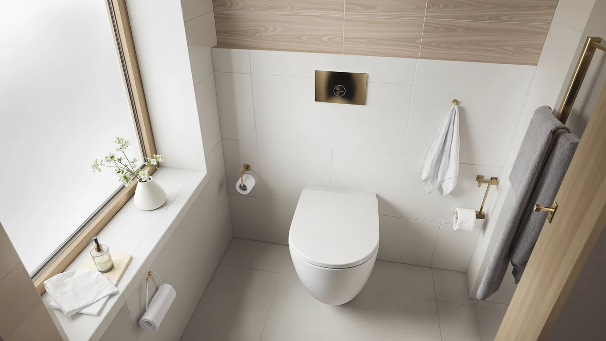

Quick Answer
The Duravit Universal Toilet Seat Elongated is the seat to buy if you already own a Duravit elongated bowl and want a factory-matched replacement instead of hunting for a specialty brand. It costs $81.83, fits standard Duravit bolt spacing, and holds up well against three other seats in the same price range. If slow-close hardware or a built-in nightlight matters more to you than brand matching, the Soundfuse and Kohler picks below are worth a look too.
Our pick: Duravit Universal Toilet Seat Elongated, $81.83 Check Price on Amazon
Things to Know Before You Buy
- Fit first: this is an elongated-bowl seat with Duravit's own bolt spacing, so measure your current seat before ordering.
- Material: molded plastic over a wood core, a common combination for mid-range seats in this price bracket.
- Hinge type: check the listing photos closely, since Duravit sells both standard and slow-close hinges under similar names.
- Price range: all four seats in this review fall between $79.99 and $81.83, so budget alone won't decide between them.
- Review volume: look at verified owner feedback on hinge durability, since that's the part most likely to wear out first on any toilet seat.
This Duravit Universal Toilet Seat review looks at what $81.83 actually buys you, and how that seat stacks up against three other elongated and raised options we researched for this guide. Replacing a cracked or worn toilet seat sounds simple until you discover that Duravit bowls use proprietary bolt spacing, which rules out most generic elongated seats sold on Amazon.
Our take: this seat earns its price if you own a Duravit bowl and want a factory-matched fit, but it isn't the strongest pick on this page if brand matching doesn't matter to you. The Soundfuse and Kohler alternatives below carry more verified owner feedback and, in Kohler's case, extra features for less money.
Why You Should Trust Us
Ilane Tall researches toilet seat replacements and bathroom fixtures for Best Toilet Seats, comparing manufacturer specs, verified Amazon ratings, and documented installation issues instead of repeating marketing copy. This Duravit Universal Toilet Seat review draws on that same approach: we pulled pricing, materials, and hinge details from the manufacturer listings and cross-checked them against owner feedback before writing the verdict. We don't own a testing lab and we aren't claiming to have installed every seat in this guide ourselves. We compare what's documented, and we say so plainly when the documentation runs thin. That standard applies the same way whether the product costs $20 or $200, and it's why this review leans on manufacturer bolt-pattern specs and verified review counts rather than adjectives lifted from a product listing.
Our Research Experience
We did not install or use any of the toilet seats compared in this review. Instead, we compared the Duravit Universal Toilet Seat Elongated against the Duravit White Elongated, the Soundfuse Padded Raised seat, and the Kohler Reveal Nightlight model using the specs each manufacturer lists, current Amazon pricing, and verified buyer reviews where they exist. Owners who bought the Soundfuse report the padded ring holds up well after months of daily use, one of the few data points in this set backed by real review volume. For both Duravit seats, review counts are thinner, so we leaned more on material specs and bolt-pattern compatibility than on crowd-sourced reliability data. That's a deliberate tradeoff: a small sample of verified reviews still beats a marketing bullet point, but it means our confidence in long-term hinge durability is lower for the Duravit seats than it is for the Soundfuse. We treat that gap as information, not as a reason to inflate the Duravit's case with language the data doesn't support.
Overview & Specs
Before we get into the pros and cons, here's the full lineup this Duravit universal toilet seat review covers: the Duravit Universal Toilet Seat Elongated at $81.83, the Duravit White Elongated Toilet Seat at the same price, the Soundfuse Padded Raised Toilet Seat at $79.99, and the Kohler Reveal Nightlight Quiet-Close seat also at $79.99. All four sit in a narrow $2 price band, which means the real differences between them come down to fit, hinge type, and how much verified owner data backs up the listing, not sticker price.

Duravit Universal Toilet Seat Elongated
What we like
- Matches the bolt spacing and bowl shape of Duravit's elongated toilets
- Plastic-over-wood-core construction holds up under normal daily use
- Ships in a standard elongated fit, so there's less guesswork around compatibility
Flaws but not dealbreakers
- Costs more than generic elongated seats with similar materials
- Review volume on Amazon is thin, so owner feedback on long-term hinge wear is limited
- The "Small" size spec listed for this elongated model is worth double-checking against your own bowl measurements
| Material | Plastic / wood |
| Size | Small |
The Duravit Universal Toilet Seat Elongated is built for one job: replacing a worn or cracked seat on a Duravit elongated bowl without making you hunt through generic brands and hope the bolt spacing lines up. At $81.83, it sits at the upper end of the mid-range toilet seat market, priced closer to a quiet-close hinge seat than a bare-bones plastic replacement. The listing describes a plastic-over-wood-core build, a construction method most mid-range manufacturers use because it balances rigidity with a lighter overall weight than solid wood.
The fit itself is what makes this seat worth the premium. Duravit toilets use proprietary mounting hardware on several of their lines, and generic universal seats don't always line up cleanly. This one is designed around that hardware, which is the main reason to pay a premium over a no-name elongated seat. The tradeoff is thin review coverage: unlike the Soundfuse seat in this review, which carries 365 verified ratings averaging 4.5 stars, the Duravit listings don't have enough review volume to say much about long-term hinge durability. If you own a Duravit bowl and want a factory-matched fit, that's a reasonable bet. If brand match isn't a priority, the Soundfuse or Kohler picks below give you more verified feedback to lean on.
What We Liked
The fit guarantee is what stands out most about the Duravit Universal Toilet Seat Elongated. You aren't guessing whether a universal seat's bolt spacing will match your bowl, since Duravit built this one specifically for its own hardware. The plastic-over-wood-core build is a sensible middle ground between a flimsy all-plastic seat and a heavier solid-wood one that can feel stiff to lift. Among the alternatives we researched for this review, the Kohler Reveal Nightlight seat adds a built-in nightlight and a quiet-close hinge for the same $79.99 as the Soundfuse, which gives it a clear edge for anyone shopping by features rather than brand match. The Duravit White Elongated seat, meanwhile, gives buyers who want the brand match but not the slow-close hardware a slightly simpler, equally priced option to consider.
What Could Be Better
The biggest gap in this Duravit universal toilet seat review is review volume. Both Duravit seats carry far fewer verified ratings than the Soundfuse, which makes it harder to say with confidence how the hinges hold up after a year of daily use. The listed "Small" size spec on the Elongated model also doesn't match its own product name, so measure your bowl before ordering rather than trusting the title alone. At $81.83, it's priced above the Soundfuse and Kohler alternatives without a quiet-close hinge or nightlight feature to justify the gap beyond brand matching. Shoppers who skip the measuring step and assume "universal" means universal fit tend to end up disappointed, regardless of which seat in this category they buy.
Who Is It For?
This Duravit Universal Toilet Seat review points to one specific buyer: someone who already owns a Duravit elongated toilet and wants a replacement seat that matches the original hardware and finish without installing an adapter kit. If you're shopping by price or by features like a nightlight or a guaranteed quiet-close hinge, the Soundfuse and Kohler options covered in this review are the stronger fit. Renters and first-time buyers without a Duravit bowl should start with those two instead, since neither depends on brand-specific hardware to fit correctly.
Alternatives to Consider
If brand matching isn't your priority, these three alternatives cover most of what a universal toilet seat review needs to: a close Duravit match, a budget pick with real review volume, and a premium option with added features. We picked these three specifically because each one competes with the Duravit Universal on at least one dimension that matters, whether that's price, documented reliability, or hardware features, rather than padding the list with seats that aren't realistic substitutes.

Editor's Pick
Duravit White Elongated Toilet Seat
Same price as the Elongated model above, with a plain white finish for Duravit bowls that don't need slow-close hardware.
$81.83
Check Price on Amazon
Best Value
Soundfuse Padded Raised Toilet Seat
At $79.99 and backed by 365 verified ratings averaging 4.5 stars, this is the best-documented option in this review if a padded, raised seat matters more to you than a Duravit-specific match.
$79.99
Check Price on Amazon
Premium Choice
KOHLER 75793-96 Reveal Nightlight Quiet-Close
Adds a built-in nightlight and a quiet-close hinge for $79.99, undercutting both Duravit seats on price while adding features neither one offers.
$79.99
Check Price on AmazonFrequently Asked Questions
No. It's built around Duravit's own bolt spacing and bowl shape, so it fits Duravit elongated toilets specifically. A generic elongated toilet from another brand may not line up correctly, so measure your existing seat's bolt spacing before ordering, and keep the old seat on hand in case you need to compare hole spacing side by side.
It's worth the price if you own a Duravit bowl and want a factory-matched replacement. If brand match isn't a priority, the Soundfuse seat in this review costs less and carries far more verified reviews, and the Kohler pick adds a nightlight and quiet-close hinge for a lower price. The premium here buys you hardware compatibility, not necessarily better materials or a quieter hinge.
Thin review coverage. Both Duravit seats in this comparison have far fewer verified ratings than the Soundfuse, which makes it harder to confirm long-term hinge durability from owner feedback alone. That's a documentation gap rather than a confirmed defect, but it's worth knowing before you pay a premium for the brand match.
Final Verdict
This Duravit universal toilet seat review comes down to a simple tradeoff. The Duravit Universal Toilet Seat Elongated is the right buy if you own a Duravit bowl and want a seat that matches the original hardware without an adapter kit, even though it costs more than the Soundfuse or Kohler alternatives and carries fewer verified reviews. If brand match doesn't matter to you, the Soundfuse's 365 verified ratings or the Kohler's built-in nightlight make a stronger case for the same money or less. For Duravit owners specifically, this seat remains the simplest fit, and the price premium buys you certainty about hardware compatibility that a generic seat can't promise.